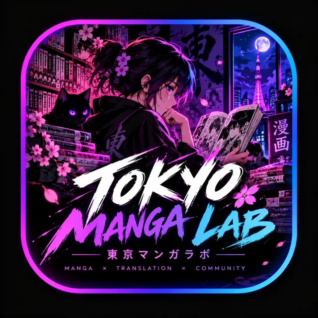

Manga workflows
Bring reading, chapter preparation, page cleanup, and editing tasks into a more organised creative process.
A manga-focused creative project centred on reading, chapter preparation, translation workflows, lettering, and typesetting.

Tokyo Manga Lab focuses on manga reading, chapter preparation, translation workflows, lettering, and typesetting. The project is being shaped step by step; this page will be updated as specific tools and public resources are confirmed.
Bring reading, chapter preparation, page cleanup, and editing tasks into a more organised creative process.
Focus on readable lettering, speech-bubble text placement, consistent typography, and careful image editing.
Build toward a clearer collection of project resources and ways for interested manga fans and creators to connect.
Find the developer's projects on GitHub or return to the Tokyo Brotherhood Lab homepage.